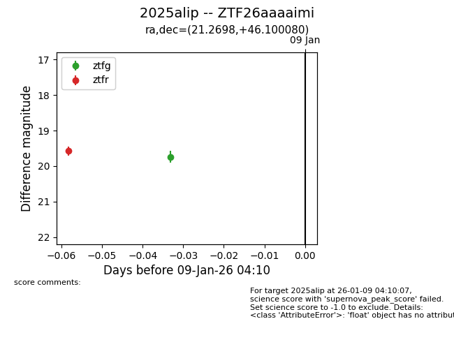
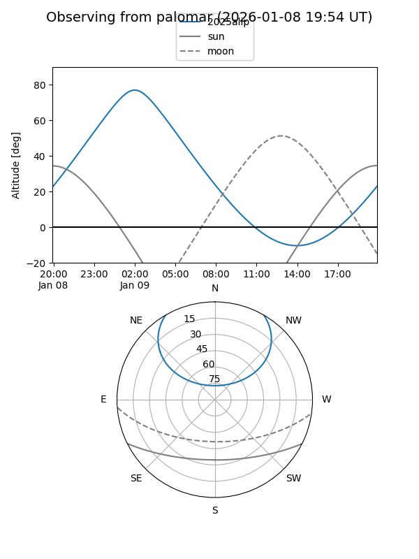

2025alip
Target 2025alip at 2026-01-09 04:10
Aliases and brokers:
FINK:
Lasair:
ALeRCE:
TNS:
YSE:
alt names
ZTF26aaaaimi (ztf,fink_ztf)
2025alip (tns,yse)
Coordinates:
equatorial (ra, dec) = 21.2698,+46.10008
equatorial (HMS+DMS) = 01:25:04.76,+46:06:00.29
galactic (l, b) = (128.9998,-16.37494)
Flags:
Photometry:
last ztfg=19.74, ztfr=19.57
1 ztfg, 1 ztfr detections
Lightcurve

Visibility


Additional plots